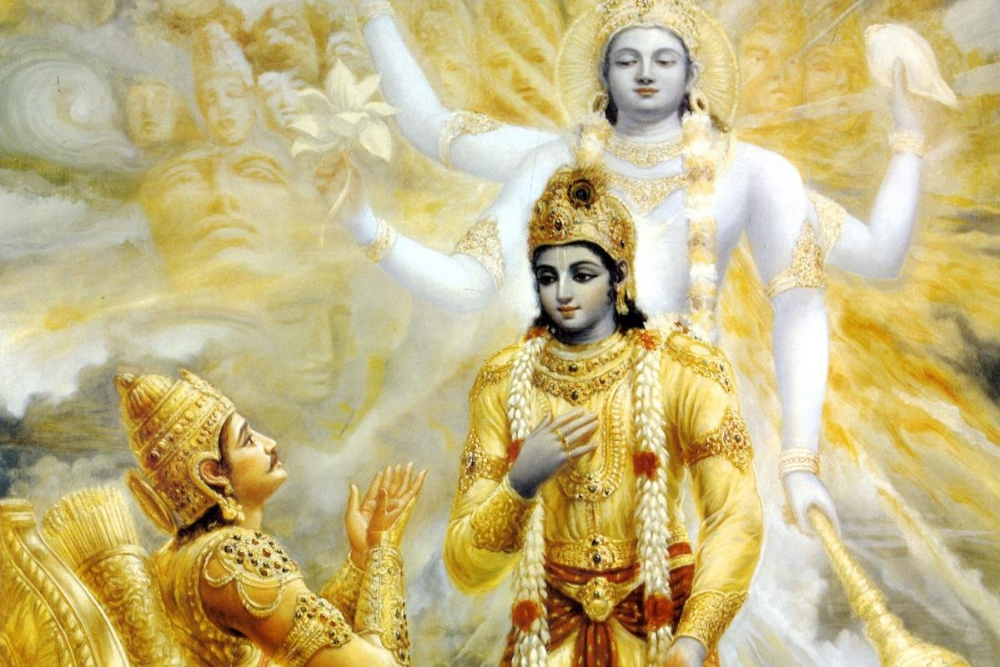
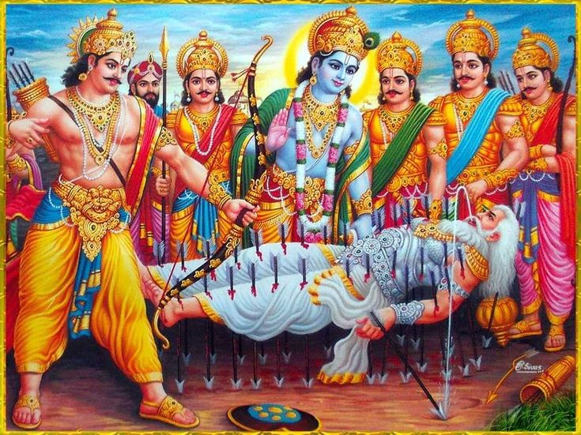
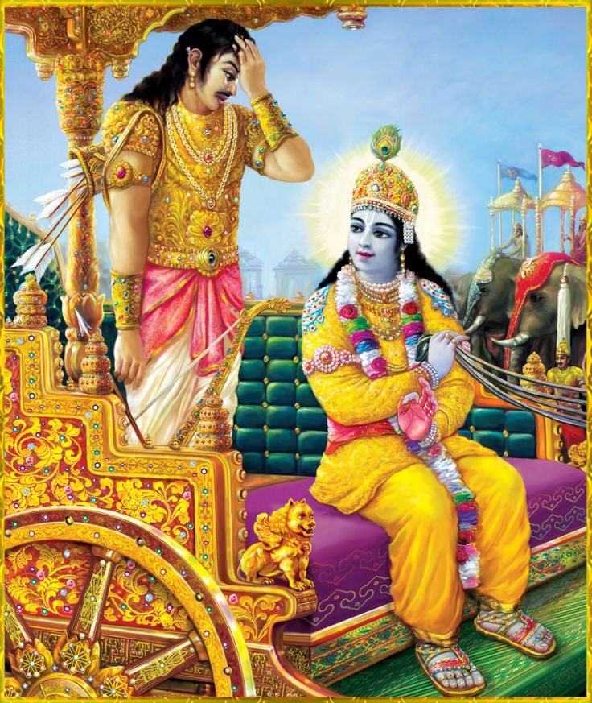
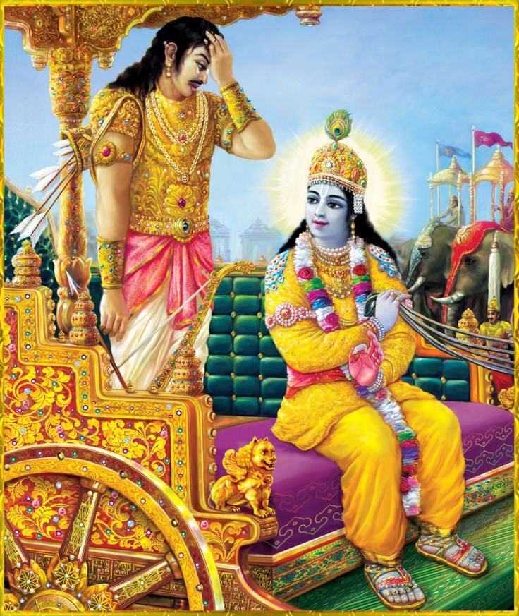

BHAGVAD GITA SHLOKS



 

Bhagavad Gita
The History of the Gita
by Swami B.V. Giri Mahārāja
Since time immemorial, the Bhagavad-gītā has been a prime source of inspiration for many great thinkers and philosophers in both the east and the west. In ancient times, the first commentary on the Gītā was written by Ādi Śaṅkara, who was the first ācārya to treat it as a freestanding text. Subsequently, other great ācāryas such as Rāmānuja, Madhva, Śrīdhara Svāmī and others wrote commentaries on the Gītā that presented its essential devotional significance, in stark contrast to Ādi Śaṅkara’s impersonal interpretation.
In the western world, the Bhagavad-gītā has been highly appreciated by erudite scholars and philosophers such as Henry David Thoreau, Friedrich Schlegel, Arthur Schopenhauer, Carl Jung and Herman Hesse. Upon reading the Gītā, the famous American transcendentalist, Ralph Waldo Emerson commented:
I owed a magnificent day to the Bhagavad-gītā. It was the first of books; it was as if an empire spoke to us, nothing small or unworthy, but large, serene, consistent, the voice of an old intelligence which in another age and climate had pondered and thus disposed of the same questions which exercise us. (Journals of Ralph Waldo Emerson)
Originally, the Bhagavad-gītā is part of the ancient historical epic, the Mahābhārata, composed by the great sage Vyāsa in approximately 3100 BCE. The eighteen chapters of the Bhagavad-gītā are found within the Sixth Canto of the Mahābhārata known as the Bhīṣma-parva, which altogether contains 117 chapters. Initially Vyāsa wrote the 8,800 core verses of the Mahābhārata and later his disciples Vaiśampāyana and Sūta added further historical details until the Mahābhārata finally consisted of 100,000 verses – seven times the size of Homer’s Illiad and fifteen times the size of the King James Bible.
The word Mahābhārata means ‘The History of Greater India’ and recounts the story of two feuding royal families, the Pāṇḍavas (the sons of Pāṇḍu) and their cousins, the Kauravas (the sons of Dhṛtarāṣṭra). Both Pāṇḍu and his brother Dhṛtarāṣṭra belonged to the royal Kuru Dynasty of Hastināpura (modern day Delhi). Although Dhṛtarāṣṭra was the elder of the two, he was born blind and so the throne was passed on to Pāṇḍu, who became the heir-apparent.
However Pāṇḍu died untimely, leaving five children – Yudhiṣṭhira, Arjuna, Bhīma, Nakula and Sahadeva. While the Pāṇḍavas were still young, their uncle Dhṛtarāṣṭra assumed the throne as regent until they were of age to rule the kingdom. Yet due to his excessive paternal attachment, Dhṛtarāṣṭra schemed that his own sons, led by the corrupt Duryodhana, would ascend the imperial throne. To this end, and with the consent of his father, Duryodhana made several assassination attempts upon the lives of the Pāṇḍavas. Despite the wise counsel of his grandfather Bhīṣma, his uncle Vidura and his military teacher Droṇa, Duryodhana continued to plot against his cousins. Yet, due to the protection of Śrī Kṛṣṇa, the Pāṇḍavas were able to foil all his murderous attempts.
Historically speaking, Śrī Kṛṣṇa was the nephew of Pāṇḍu’s wife Queen Kuntī and was thus the cousin of the Pāṇḍavas. However, Kṛṣṇa was not simply a royal prince, but the Supreme Person Himself who had descended to Earth to perform His pastimes and to establish the principles of dharma. Due to their righteous behaviour, Śrī Kṛṣṇa always favoured the Pāṇḍavas.
After numerous failed murder attempts, Duryodhana finally challenged the Pāṇḍavas to a rigged game of dice. Duryodhana cheated and won the game, and the Pāṇḍavas lost their kingdom. The result was that the Pāṇḍavas were forced into exile for thirteen years.
After completing their thirteen years of exile, the Pāṇḍavas returned to the capital and requested Duryodhana to return their rightful kingdom. When the proud Duryodhana flatly refused, they requested him to at least give them five villages to rule over. At this Duryodhana curtly remarked that he would not even give them enough land in which to drive a pin.
Although the Pāṇḍavas sent Śrī Kṛṣṇa as an ambassador to sue for peace, Duryodhana blatantly refused to listen. War was now inevitable.
Rulers as far west as Syria and as far east as China came to take part in the battle – some supporting the Kauravas due to their political designs, and others favouring the Pāṇḍavas due to their piety. During this fratricidal war Kṛṣṇa stated that He would not take up arms for either side, but accepted the position as Arjuna’s charioteer. Thus, in the month of December, in 3138 BCE, both armies assembled on the planes of the holy place known as Kurukṣetra.
The significance of Kurukṣetra is related in the Vāmana Purāṇa that narrates how the virtuous king Kuru, the ancestral patriarch of the Pāṇḍava and Kaurava Dynasty, performed rigorous austerities at Kurukṣetra. Because of this act, Kuru was given two blessings – firstly that Kurukṣetra would be named after Kuru and secondly, that anyone who died at Kurukṣetra would attain the celestial planets.
The Bhagavad-gītā is spoken on the first day of the war at Kurukṣetra. As the two armies prepare to fight, the blind Dhṛtarāṣṭra sits in his court with his faithful servant Sañjaya and inquires from him as to what the virtuous Pāṇḍavas are doing. Sañjaya, a disciple of the great sage Vyāsa, had been blessed with the mystic power to observe the conflict far from the battlefield at the palace in Hastināpura. Sañjaya then narrates to the old emperor the sacred conversation between Śrī Kṛṣṇa and Arjuna. Thus the Bhagavad-gītā was received by Sañjaya and repeated to Dhṛtarāṣṭra for the spiritual benefit of all humanity.
The Contents of Bhagvad Gita are as follows:
- Preface to Bhagavad Gita
- Introduction to Bhagavad Gita
- The History of the Gita
- Mangalacarana of Bhagavad Gita
- Chapter 1 – Sainya-Darśana (Observing the Armies on the Battlefield)
- Chapter 2 – Sāṅkhya Yoga (The Yoga of Analysis)
- Chapter 3 – Karma Yoga (The Yoga of Action)
- Chapter 4 – Jñāna Yoga (The Yoga of Knowledge)
- Chapter 5 – Karma Sannyāsa Yoga (The Yoga of the Renunciation of Action)
- Chapter 6 – Dhyāna Yoga (The Yoga of Meditation)
- Chapter 7 – Jñāna-Vijñāna Yoga (The Yoga of Knowledge and Realisation)
- Chapter 8 – Tāraka-Brahma Yoga (The Yoga of the Supreme)
- Chapter 9 – Rāja Guhya Yoga (The Yoga of the Greatest Secret)
- Chapter 10 – Vibhūti Yoga (The Yoga of Divine Splendour)
- Chapter 12 – Bhakti Yoga (The Yoga of Devotion)
- Chapter 13 – Prakṛti-Puruṣa Viveka Yoga (The Yoga of Differentiation)
- Chapter 14 – Guṇa-Traya Vibhāga Yoga (The Yoga of Understanding the Three Modes of Material Nature)
- Chapter 15 – Puruṣottama Yoga (The Yoga of the Supreme Person)
- Chapter 16 – Daivāsura Sampad Vibhāga Yoga (The Yoga of Discretion-Pious and Impious Natures)
- Chapter 17 – Śraddhā-Traya Vibhāga Yoga (The Yoga Explaining Three Types of Faith)
- Chapter 18 – Mokṣa Yoga (The Yoga of Supreme Perfection)